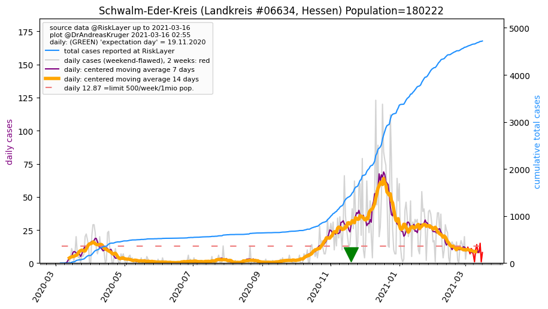
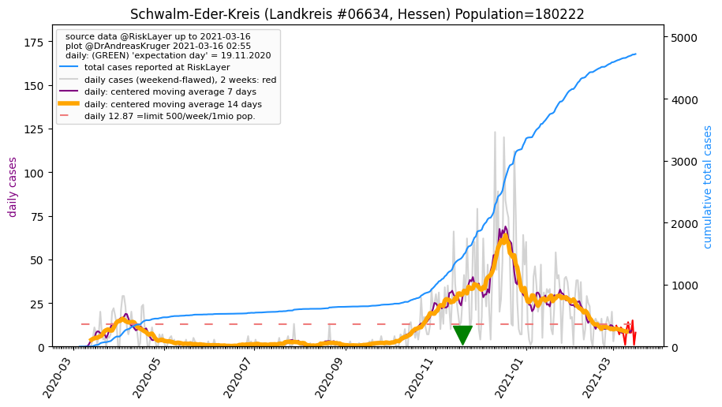

")

")
")
")
")
")
")
| Hersfeld-Rotenburg_LK (0.0 km) |
Schwalm-Eder-Kreis_LK (29.7 km)  |
Wartburgkreis_LK (32.3 km) |
| Werra-Meißner-Kreis_LK (34.0 km) |
Fulda_LK (38.1 km) |
Eisenach_KS (39.6 km) |
| Vogelsbergkreis_LK (45.2 km) |
Kassel_KS (49.5 km) |
All plots are regenerated with new data every night. Beware this temporary hotspot is an experimental page - it might get removed, so please do not link to it. Instead link to project http://tiny.cc/cov19de.